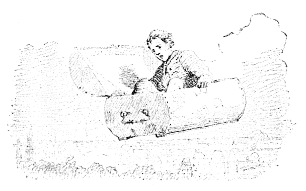
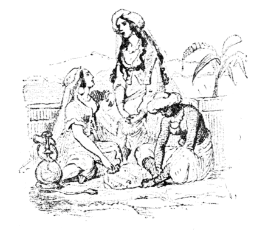

| ひこうかばん | |
| アンデルセンハンス・クリスチャン | |
| (2012) | |
ひこうかばん
ハンス・クリスティアン・アンデルセン
楠山正雄訳

むかし、あるとき、お金持のあきんどがありました。どのくらいお金持だといって、それは町の大通のこらず銀貨で道をこしらえて、そのうえ横町の小路
にまでそれをしきつめて、それでもまだあまるほどの［＃「ほどの」は底本では「ほのど」］
お金を持っていました。でも、このあきんどは、そんなことはしません。もっとほかにお金をつかうことをかんがえて、一シリングだせば、一ターレルになってもどってくる工夫をしました。まあ、そんなにかしこいあきんどでしたが――そのうち、このあきんども死にました。
そこで、むすこが、のこらずのお金をもらうことになりました。そうしてたのしくくらしました。毎晩、仮装舞踏会
へでかけたり、お札
でたこ
をはってあげたり、小石の代りに、金貨で海の水を打ってあそんだりしました。まあこんなふうにすれば、いくらあっても、お金はさっさとにげていってしまうでしょう。とうとうむすこはたった四シリングの身代
になってしまいました。身につけているものといっては、うわぐつ一足と、古どてらのねまきのほかには、なにもありません。こうなると、友だちも、いっしょに往来をあるくことをきまりわるがってまるでよりつかなくなりました。でもなかでひとり、しんせつな友だちがいて、ふるいかばんをひとつくれました。かばんのうえには、「これになにかおつめなさい。」とかいてありました。いやどうもこれはたいへんありがたいことでした。けれど、あいにくなにもつめるものがないので、むすこはじぶんがそのかばんのなかにはいっていました。
ところが、これが、とんだとぼけたかばんでした。錠前をおすといっしょに、空のうえにまい上がるのです。ひゅうッ、さっそく、かばんはひこうをはじめました。ふわりふわり、かばんはむすこをのせたまま、煙突の穴をぬけて、雲をつきぬけて、とおくへとおくへとんでいきました。でも、かばんの底が、みしみしいうたんびに、むすこは、はらはらしました。途中でばらばらになって、空のうえからまっさかさまに木の葉落しということになったら、すばらしいどころではありません。やれやれこわいこと、まあこんなふうにして、むすこは、トルコの国までいきました。そこでかばんを、ひとまず、森の落ち葉のなかにかくして、町へけんぶつにでかけました。けっこう、そのままのなりでね。なぜなら、トルコ人なかまでは、みんながこの男とおなじように、どてらのねまきをひきずって、うわぐつをはいていましたもの。ところで、むすこがきょろきょろしながらあるいていきますと、むこうから、どこかのばあやが、こども［＃「こども」は底本では「こど」］
をつれてくるのにであいました。
「ねえもし、トルコのばあやさん。」と、むすこはたずねました。「この町のすぐそとにある大きなお城はどういうお城ですね。ずいぶん高い所に、窓がついていますね。」
「あれは、王さまのお姫さまのおすまいです。」と、ばあやがこたえました。「お姫さまは、お生まれになるさっそく、なんでもたいへん運のわるいおむこさんをおむかえになるという、いやなうらない
がでたものですから、そのわるいおむこさんのよりつけないように、王さまとお妃
さまがごいっしょにおいでのときのほか、だれもおそばにいけないのでよ。」
「いや、ありがとう。」
むすこはこういって、また森へもどっていきました。そうして、すぐかばんのなかにはいると、そのままお城の屋根のうえへとんでいって、お姫さまのおへやの窓からそっとなかにはいりました。
お姫さまは、ソファのうえで休んでいました。それが、いかにもうつくしいので、むすこはついキスしずには、いられませんでした。それで、お姫さまは目をさまして、たいそうびっくりした顔をしました。
でも、むすこは、こわがることはない、わたしは、トルコの神さまで、空をあるいて、わざわざやって来たのだといいますと、お姫さまはうれしそうににっこりしました。
ふたりはならんで腰をかけて、いろんな話をしました。むすこはまず、お姫さまの目のことを話しました。なんでもそれはこのうえなくきれいな黒い水をたたえた、ふたつのみずうみで、うつくしいかんがえが、海の人魚のように、そのなかでおよぎまわっているというのです。それから、こんどはお姫さまの額
のことをいって、それは、このうえなくりっぱな広間と絵のある雪の山だといいました。それから、かわいらしい赤ちゃんをもってくるこうのとりのことを話しました。
そう、どれもなかなかおもしろい話でした。そこで、むすこは、お姫さまに、わたしのおよめさんになってくださいといいました、お姫さまは、すぐ「はい。」とこたえました。「でもこんどいらっしゃるのは土曜日にしていただきますわ。」と、お姫さまはいいました。「その晩は王さまとお妃
さまがここへお茶においでになるのですよ。わたしそこでトルコの神さまとご婚礼するのよといって上げたら、おふたりともずいぶん鼻をたかくなさるでしょう。でも、あなた、そのときはせいぜいおもしろいお話をしてあげてくださいましね。両親とも、たいへんお話ずきなのですからね。おかあさまは、教訓のある、高尚なお話が好きですし、おとうさまは、わらえるような、おもしろいお話が好きですわ。」
「ええ、わたしは、お話のほかには、なんにも、ご婚礼のおくりものをもってこないことにしましょう。」と、むすこはいいました。そうして、ふたりはわかれました。でも、わかれぎわに、お姫さまは剣をひとふり、むすこにくれました。それは金貨でおかざりがしてあって、むすこには、たいへんちょうほうなものでした。
そこで、むすこはまたとんでかえっていって、あたらしいどてらを一枚買いました。それから、森のなかにすわって、お話をかんがえました。土曜日までにつくっておかなければならないのですが、それがどうしてよういなことではありませんでした。
さて、どうにかこうにか、お話ができ上がると、もう土曜日でした、
王さまとお妃さまと、のこらずのお役人たちは、お姫さまのところで、お茶の会をして待っていました。むすこは、そこへ、たいそうていねいにむかえられました。
「お話をしてくださるそうでございますね。」と、お妃さまがおっしゃいました。「どうか、おなじくは、いみのふかい、ためになるお話が伺いとうございます。」
「さようさ。だが、ちょっとはわらえるところがあってもいいな。」と、王さまもおっしゃいました。
「かしこまりました。」と、むすこはこたえて、お話をはじめました。そこで、みなさんもよくきくことにしてください――
『さて、あるとき、マッチの束
がございました。そのマッチは、なんでもじぶんの生まれのいいことをじまんにしていました。けいずをただすと、もとは大きな赤もみ
の木で、それがちいさなマッチの軸木
にわられて出てきたのですが、とにかく、森のなかにある古い大木ではありました。ところでマッチはいま、ほくち箱とふるい鉄なべのあいだに坐っていました。で、こういうふうに、若いときの話をはじめました。マッチのいうには、「そうだ、わたしたちが、まだみどりの枝のうえにいたときには、いや、じっさい、みどりの枝のうえにいたのだからな。まあ、そのじぶんは毎日、朝と晩に、ダイヤモンドのお茶をのんでいた。それはつまり、露のことだがね。さて、日がでさえすれば、一日のどかにお日さまの光をあびる、そこへ小鳥たちがやって来て、お話をしてきかせてくれたものだ。なんでも、わたしたちがたいそうなお金持だったということはよく分かる。なぜなら、ほかの広い葉の木たちは、夏のあいだだけきものを着るが、わたしたちの一族にかぎって、冬のあいだもずっと、みどりのきものを着つづけていたものな。ところが、ある日、木こりがやってきて 森のなかにえらい革命
さわぎをおこした、それで一族は、ちりぢりばらばらになってしまった。でも、宗家
のかしらは第一等の船の親柱に任命されたが、その船はいつでも世界じゅう漕
ぎまわれるというりっぱな船だ。ほかの枝も、それぞれの職場
におちついている。ところで、わたしたちは、いやしい人民どものために、あかりをともしてやるしごとを引きうけた。そういうわけで、こんな台所へ、身分のあるわれわれが来たのも、まあはきだめにつる
がおりたというものだ。」
「わたしのうたう歌は、すこし調子
がちがっている。」と、マッチのそばにいた鉄なべがいいました。「［＃「「」は底本では欠落］
わたしが世の中に出て来たそもそもから、どのくらい、わたしのおなかで煮たり沸かしたり、そのあとたわしでこすられたか分からない。わたしは徳用でもち
のよいことを心がけているので、このうちではいちばんの古参と立てられるようになった。わたしのなによりのたのしみは、食事のあとで、じぶんの居場所におさまって、きれいにみがかれて、なかまのひとたちと、おたがいもののわかった話をしあうことだ。バケツだけは、ときどき裏までつれていかれるが、そのほかのなかまは、いつでもうちのなかでくらしている。わたしたちのなかまで新聞種
の提供者
は、市場がよいのバスケットだ。ところが、あの男は、政府や人民のことで、だいぶおだやかでない話をする。それで、こないだも、古瓶
のじいさんが、びっくりしてたなからころげおちて、こなごなにこわれたくらい［＃「くらい」は底本では「くい」］
だ。あいつは、自由主義だよ、まったく。」
「さあ、きみは、あんまりしゃべりすぎるぞ。」と、ほくち箱が、くちをはさみました。そして、火切石にかねをぶつけたので、ぱっと火花がちりました。
「どうだ、おたがいに、おもしろく、ひと晩すごそうじゃないか。」
「うん、このなかで、だれがいちばん身分たかく生まれてきたか、いいっこしようよ。」と、マッチがいいました。
「いいえ、わたくし、じぶんのことをとやかく申したくはございません。」と、石のスープ入がこたえました。「まあ、それよりか、たのしい夕べのあつまりということにいたしてはどうでございましょう。さっそく、わたくしからはじめますよ。わたくしは、じっさい出あったお話をいたしましょう、まあどなたもけいけんなさるようなことですね。そうすると、たれにもよういにそのばあいがそうぞうされて、おもしろかろうとおもうのでございます。さて、東海は、デンマルク領のぶな林で――」［＃「」」は底本では欠落］
「いいだしがすてきだわ。この話、きっとみんなおもしろがるわ。」と、お皿たちがいっせいにさけびました。
「さよう、そこのある、おちついた家庭で、わたくしはわかい時代をおくったものでしたよ。そのうちは、道具などがよくみがかれておりましてね。ゆかはそうじがゆきとどいておりますし、カーテンも、二週間ごとに、かけかえるというふうでございました。」
「あなたは、どうもなかなか話じょうずだ。」と、毛ぼうきがいいました。「いかにも話し手が婦人だということがすぐわかるようで、きいていて、なんとなく上品で、きれいな感じがする。」
「そうだ。そんな感じがするよ。」と、バケツがいって、うれしまぎれに、すこしとび上がりました。それで、ゆかのうえに水がはねました。
で、スープ入は話をつづけましたが、おしまいまで、なかなかおもしろくやってのけました。
お皿なかまは、みんなうれしがって、ちゃらちゃらいいました。ほうきは、砂穴からみどり色をしたオランダぜりをみつけてきて、それをスープ入のうえに、花環
のようにかけてやりました。それをほかの者がみてやっかむのはわかっていましたが、「きょう、あの子に花をもたしておけば、あしたはこっちにしてくれるだろうよ。」と、そう、ほうきはおもっていました。
「さあ、それではおどるわ。」と、火かきがいって、おどりだしました。ふしぎですね、あの火かきがうまく片足でおどるじゃありませんか。すみっこの古椅子のきれがそれをみて、おなかをきってわらいました。
「どう、わたしも、花環がもらえて。」と、火かきがねだりました、そうして、［＃「、」は底本では「。」］
そのとおりしてもらいました。
「どうも、どいつもこいつも、くだらない奴らだ。」と、マッチはひとりでかんがえていました。
さて、こんどはお茶わかしが、［＃「、」は底本では「。」］
歌をうたう番でした。ところが風をひいているといってことわりました。そうしていずれ、おなかでお茶がにえだしたら、うたえるようになるといいました。けれどこれはわざと気どっていうので、ほんとうは、お茶のテーブルのうえにのって、りっぱなお客さまたちのまえでうたいたかったのです。
窓のところに、一本、ふるい鵞
ペンがのっていました。これはしじゅう女中たちのつかっているものでした。このペンにべつだん、これというとりえはないのですが、ただインキの底にどっぷりつかっているというだけで、それをまた大したじまんの種
にしていました。
「お茶わかしさんがうたわないというなら、かってにさせたらいいでしょう、おもての鳥かごには、小夜鳴鳥
がいて、よくうたいます。これといって教育はないでしょうが、今晩はいっさいそういうことは問わないことにしましょう。」
すると、湯わかしが、
「どうして、そんなことは大はんたいだ。」と、いいだしました。これは、台所きっての歌うたいで、お茶わかしとは、腹がわりの兄さんでした。「外国鳥の歌をきくなんて、とんでもない。そういうことは愛国的だといえようか、市場がよいのバスケット君にはんだんしておもらい申しましょう。」
ところで、バスケットは、おこった声で、
「ぼくは不愉快でたまらん。」といいました。「心のなかでどのくらい不愉快に感じているか、きみたちにはそうぞうもつかんだろう。ぜんたい、これは晩をすごすてきとうな方法でありましょうか。家のなかをきれいに片づけておくほうが、よっぽど気がきいているのではないですか。諸君は、それぞれじぶんたちの場所にかえったらいいでしょう。その上で、ぼくが、あらためて司会
をしよう。すこしはかわったものになるだろう。」
「よし、みんなで、さわごうよ。」と、一同がいいました。
そのとき、ふと戸があきました。このうちの女中がはいって来たのです。それでみんな［＃「みんな」は底本では「みん」］
はきゅうにおとなしくなって、がたりともさせなくなりました。でも、おなべのなかまには、ひとりだって、おもしろいあそびをしらないものはありませんでしたし、じぶんたちがどんなになにかができて、どんなにえらいか、とおもわないものはありませんでした。そこで、
「もちろん、おれがやるつもりになれば、きっとずいぶんおもしろい晩にしてみせるのだがなあ。」と、おたがいにかんがえていました。
女中は、マッチをつまんで、火をすりました。――おや、しゅッと音がしたとおもうと、ぱっときもちよくもえ上がったではありませんか。
「どうだ、みんなみろよ。やっぱり、おれはいちばんえらいのだ。よく光るなあ。なんというあかるさだ――」と、こうマッチがおもううち、燃えきってしまいました。』
「まあ、おもしろいお話でございましたこと。」と、そのとき、お妃
さまがおっしゃいました。「なんですか、こう、台所のマッチのところへ、たましいがはこばれて行くようにおもいました。それではおまえにむすめはあげることにしますよ。」
「うん、それがいいよ。」と、王さまもおっしゃいました。「それでは、おまえ、むすめは月曜日にもらうことにしたらよかろう。」
まず、こんな［＃「こんな」は底本では「こん」］
わけで、おふたりとももう、うちのものになったつもりで、むすこを、おまえとおよびになりました。
これで、いよいよご婚礼ときまりました。そのまえの晩は、町じゅうに、おいわいのイリュミネーションがつきました。ビスケットやケーキが、人民たちのなかにふんだんにまかれるし、町の少年たちは、往来にあつまって、ばんざいをさけんだり、指をくちびるにあてて、口笛をふいたりしました。なにしろ、すばらしいけいきでした。
「そうだ。おれもお礼になにかしてやろう。」と、あきんどのむすこはおもいました。そこで、流星花火だの、南京
花火だの、ありとあらゆる花火を買いこんで、それをかばんに入れて、空のうえにとび上がりました。
ぽん、ぽん、まあ、花火がなんてよく上がることでしょう。なんて、いせいのいい音を立てることでしょう。
トルコ人は、たれもかれも、そのたんびに、うわぐつを耳のところまでけとばして、とび上がりました。
こんなすばらしい空中現象
を、これまでたれもみたものはありません。そこで、いよいよ、お姫さまの結婚なさるお相手は、トルコの神さまにまちがいなしということにきまりました。
むすこは、かばんにのったまま、また森へおりていきましたが、「よし、おれはこれから町へ出かけて、みんな、おれのことをどういっているか、きいてこよう。」とかんがえました。なるほど、むすこにしてみれば、そうおもい立ったのも、むりはありません。
さて、どんな話をしていたでしょうか。それはてんでんがちがったことをいって、ちがった見方をしていました。けれども、なにしろたいしたことだと、たれもいっていました。
「わたしは、トルコの神さまをおがんだよ。」と、ひとりがいいました。「目が星のように光って、ひげは、海のあわのように白い。」
「神さまは火のマントを着てとんでいらしった。」と、もうひとりがいいました。「それはかわらしい天使のお子が、ひだのあいだからのぞいていた。」
まったくむすこのきいたことはみんなすばらしいことばかりでした。さて、あくる日はいよいよ結婚式の当日でした。そこで、むすこは、ひとまず森にかえって、かばんのなかでひと休みしようとおもいました。――ところがどうしたということでしょう。かばんは、まる焼けになっていました。かばんのなかにのこっていた花火から火がでて、かばんを灰にしてしまったのです。
むすこはとぶことができません。もうおよめさんのところへいくこともできません。
およめさんは、一日、屋根のうえにたって待ちくらしました。たぶん、いまだに待っているでしょう。けれどむすこはあいかわらずお話をしながら、世界じゅうながれあるいていました、でも、マッチのお話のようなおもしろい話はもうつくれませんでした。

底本：「新訳アンデルセン童話集第一巻」同和春秋社
１９５５（昭和30
）年7
月20
日初版発行
※「旧字、旧仮名で書かれた作品を、現代表記にあらためる際の作業指針」に基づいて、底本の表記をあらためました。
入力：大久保ゆう
校正：秋鹿
２００６年1
月18
日作成
青空文庫作成ファイル：
このファイルは、インターネットの図書館、青空文庫（http://www.aozora.gr.jp/）で作られました。入力、校正、制作にあたったのは、ボランティアの皆さんです。